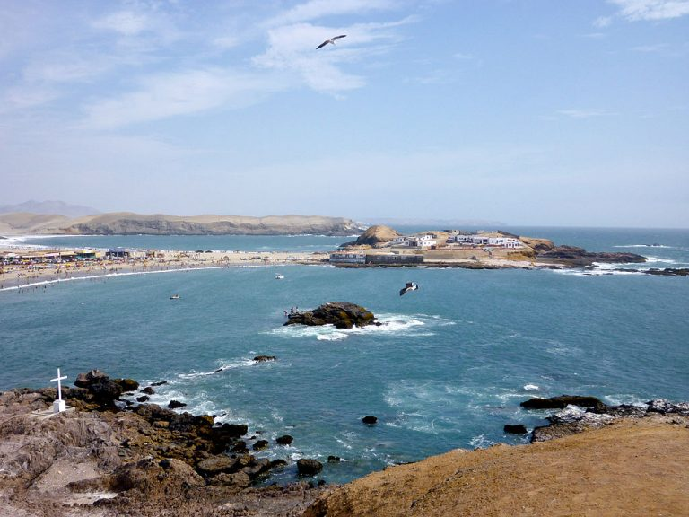

Para acampar
1.Marcahuasi
Esta montaña situada en el pueblo de San Pedro se caracteriza por ser una de las zonas más famosas para el avistamiento de ovnis en todo Latinoamérica. Debes tener cuidado, puesto que por las noches el clima puede descender a menos de 5 grados y –por encontrarte en medio de la naturaleza– la sensación de frío será mayor. Marcahuasi es todo un reto para los que quieren un campamento diferente. Pero el viaje valdrá la pena, puesto que los paisajes que verás, entre montañas, campos verdes y formaciones rocosas con figuras humanoides, serán una experiencia mágica.2.Balneario de Tuquillo
Si quieres una opción más veraniega, este balneario tiene un clima cálido durante casi todas las temporadas del año. Así, no tendrás que preocuparte por el calor sofocante durante tus noches de campamento. Se compone de cuatro playas principales: Puerto Marín, Tuquillo, Maracaná y Antivito. Está ubicado en Huarmey, en el departamento de Áncash. Desde Lima, el pasaje cuesta unos 50 soles en promedio, mientras que el viaje demora cerca de 10 horas.
Para los aventureros
1.Huacachina
Este lugar tan mágico tiene una singular leyenda relacionada con su nombre, Huacachina, que en quechua significa “mujer que llora”. ¿Quién lloró tanto? Pues una hermosa mujer de ojos verdes se entristeció de tal manera por la muerte de su amado, un valeroso general en tiempos del Incanato, que con sus lágrimas quedó formada esta magnífica laguna de tono verdoso sembrada en pleno desierto del peruano departamento de Ica.